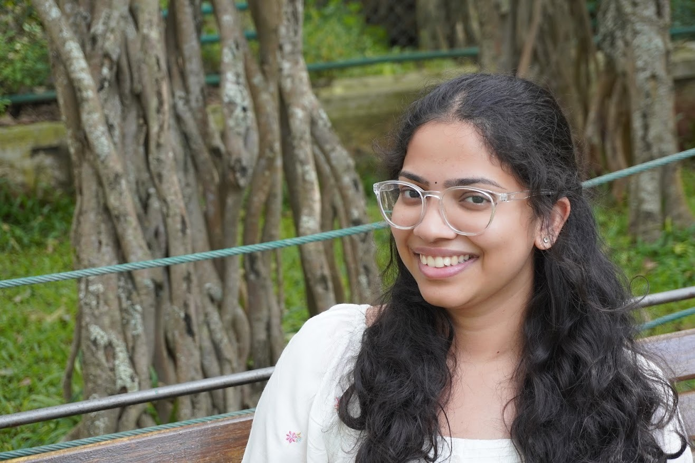

Educator · Designer · Lifelong Learner
I'm a B.Ed student, science and mathematics pre-service educator, and a UX/UI designer who uniquely combines pedagogical expertise with design thinking to create engaging, curiosity-driven learning experiences for children, helping them discover their full potential.

I'm Shruthi Arogyaswamy, an aspiring Physical Science and Mathematics educator currently pursuing my Bachelor of Education at CHRIST (Deemed to be University), Bangalore. I'm on a mission to transform the way students experience learning, making complex ideas accessible, exciting, and deeply personal.
My path into education was shaped by a real love for children. After a year as a Pre-Primary Teacher at Footprints Education, I saw firsthand how the right environment, safe, playful, and full of possibility, changes everything for a child. That conviction drives everything I do as an educator.
I'm also a UX/UI designer, which means I think visually, work with empathy, and approach every learning experience as something to be thoughtfully designed, not just delivered. I believe every child learns differently, and I genuinely enjoy the creative challenge of adapting to that.
2-year NCTE-accredited program · Physical Science & Mathematics · Pedagogy · Inclusive Education · Educational Research · IB Educator Certificate (IBEC) pathway · School Internships
Footprints Education, India's largest preschool chain. Hands-on classroom management, child care, and active learning.
Visual thinking and design empathy that I bring directly into how I plan, design, and deliver learning experiences.
Open to teaching, facilitation, and education roles across in-person and creative learning environments.
Gained hands-on teaching experience at St. Francis School (ICSE), Bengaluru, delivering Science & Mathematics lessons for Grades 6–9. Bridged theory with real classroom practice through activity-based and ICT-integrated methods, replacing passive listening with active discovery.
School Immersion Program: visited five diverse educational settings to gain broad exposure across school types:
Cared for and nurtured toddlers and preschoolers at one of India's largest preschool and daycare chains (219 centres across 29 cities). This experience gave me a foundational understanding of children: how they trust, how they explore, and how much the adults around them matter.
I began my UX/UI journey with a strong foundation in user-centred design, creating intuitive, engaging digital experiences. At Thulam Foods Pvt. Ltd., I designed their website and product packaging, translating brand identity into cohesive visual experiences using Figma, from wireframing through to high-fidelity UI.
Over time, I started bringing that same design thinking into education, approaching teaching with a student-centred mindset, the same way a designer centres the user.
💡 My background in UX/UI design allows me to design not just interfaces, but meaningful learning experiences that are intuitive, inclusive, and engaging for every student.
I use theatre and storytelling as teaching tools, helping children step outside themselves, build confidence, and make meaning through play.
Trained to make abstract concepts tangible. I design challenges, experiments, and activities that make learners actually think, not just recall.
UX/UI background means I design learning experiences with clarity, empathy, and intention. Visually engaging and structurally sound.
A strong believer that learning should move, build, and explore. I love activities that get children out of their seats and into the problem.
Trained to adapt to every learning style. I don't teach to the average; I look for each child's entry point and meet them there.
Experienced managing mixed-ability groups across ages, keeping everyone engaged, included, and contributing to the group's momentum.
Patient, warm, and emotionally attuned. I create environments where children feel safe enough to take risks, make mistakes, and grow.
Responsible and energetic. I thrive in dynamic, unpredictable environments and bring full commitment to whatever role I step into.
I believe the most powerful thing you can give a child is the experience of figuring something out themselves. Not being told the answer, but being guided just enough that they arrive there and feel the thrill of it.
That's why I build lessons around curiosity, not content. I start with questions children can actually feel: "why does this happen?", "what would change if we did it differently?" and let the learning grow from there. When a child is genuinely curious, no one needs to push them to engage.
My Science and Maths background taught me that even the most abstract ideas can be made concrete with the right activity: a role-play, a building challenge, a real problem to solve. My UX design background taught me to always design for the person in front of you, not the imaginary average student. My time in a preschool taught me that trust comes before learning. Always.
I bring all three of these into everything I do. Whether I'm planning a lesson, running an activity, or sitting next to a child who's struggling, I'm always asking: what does this child need right now to take the next step?
I'm not interested in performance. I'm interested in the quiet, proud moment when a child surprises themselves.
Every great lesson starts with a question that makes children lean in. I design for curiosity before I design for content.
Hands-on, embodied, experiential learning is not a bonus. It's the method. Children remember what they experienced, not what they were told.
There is no "standard" learner. Differentiated instruction is not a technique. It's a respect for who each child actually is.
Children take intellectual risks when they feel emotionally safe. Building that safety is always the first job, before any content.
Whether it's about teaching, education, design, or working with children — I'd love to hear from you.